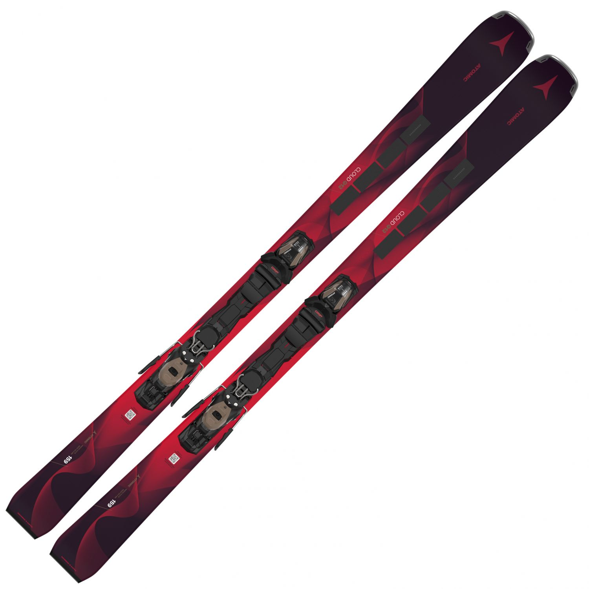

Contrairement aux skis de piste classiques ou aux skis freeride destinés uniquement aux descentes hors-piste, le ski all mountain est pensé pour offrir un équilibre optimal entre maniabilité, stabilité et adaptabilité. Également appelé ski tout terrain, il est conçu pour s’adapter à tous les terrains de la montagne.
| Nom | Image | Prix |
| Atomic Cloud Q12 |  | 499 euros |